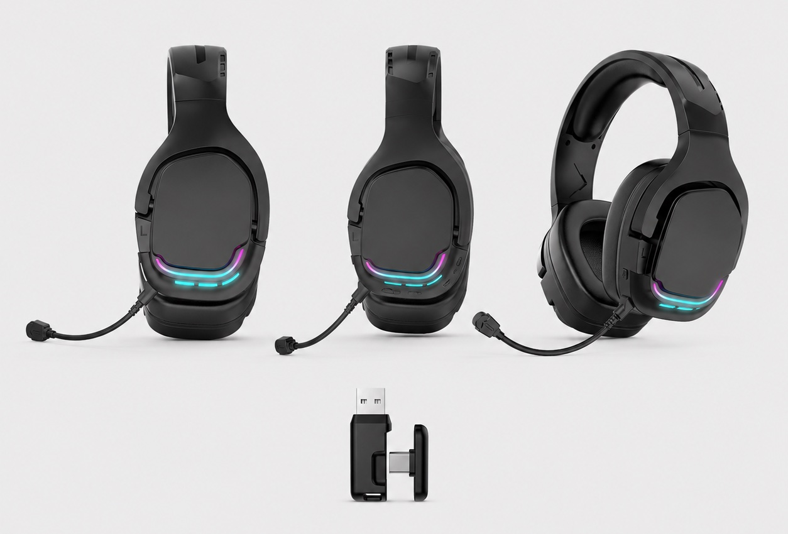
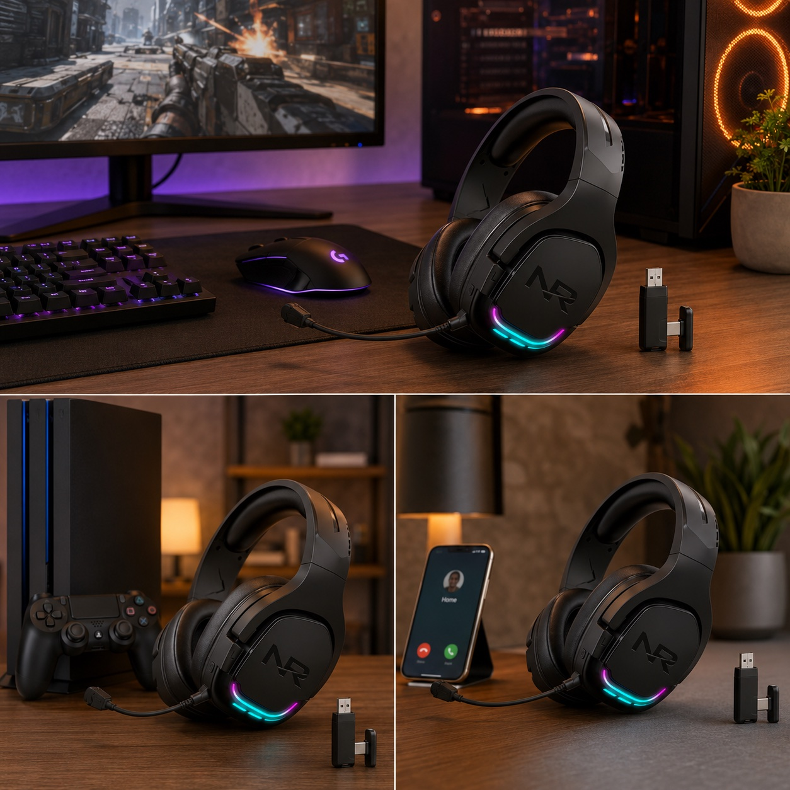
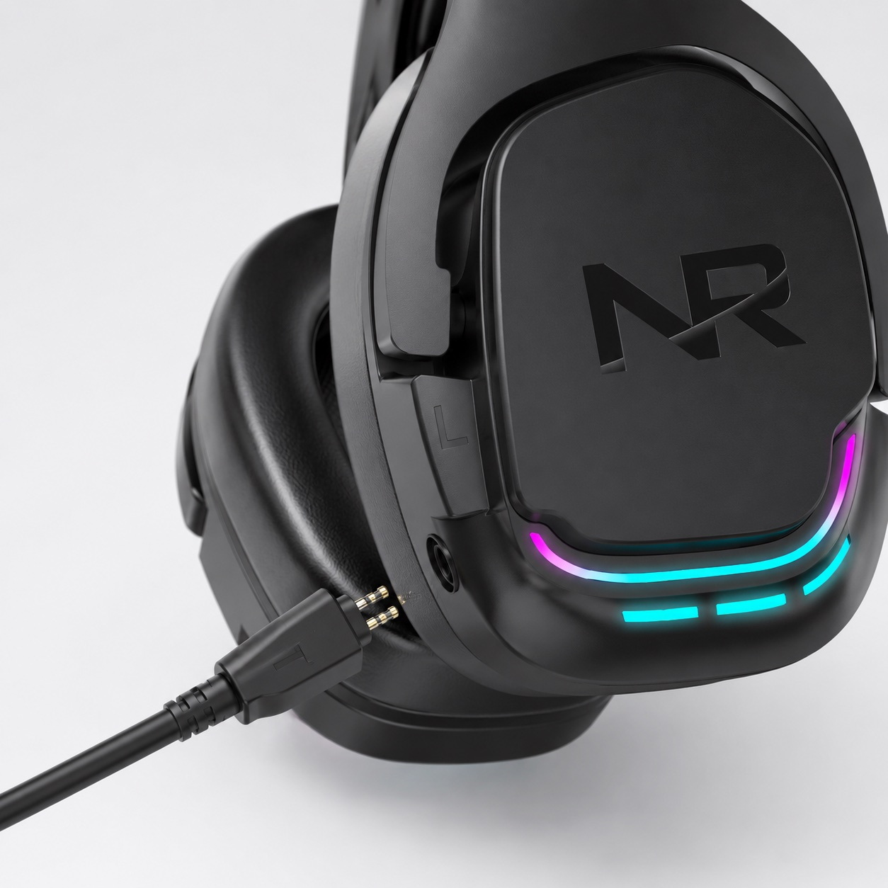
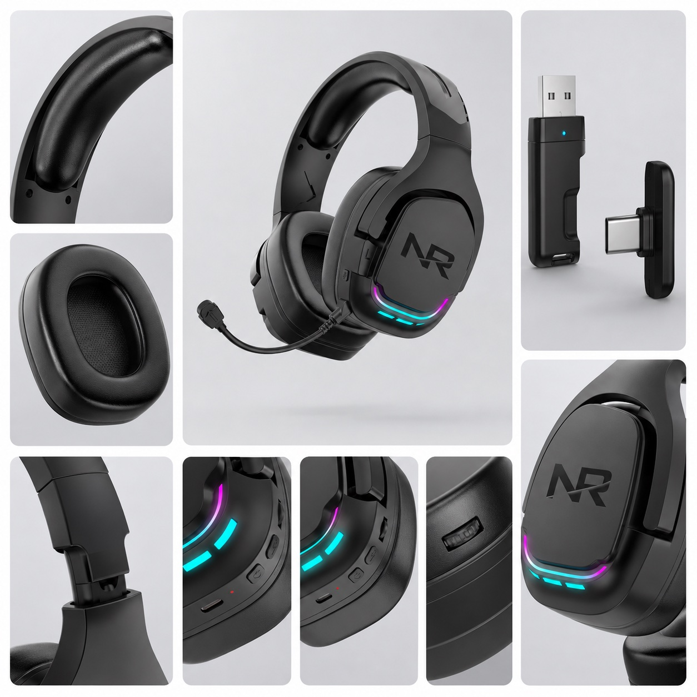
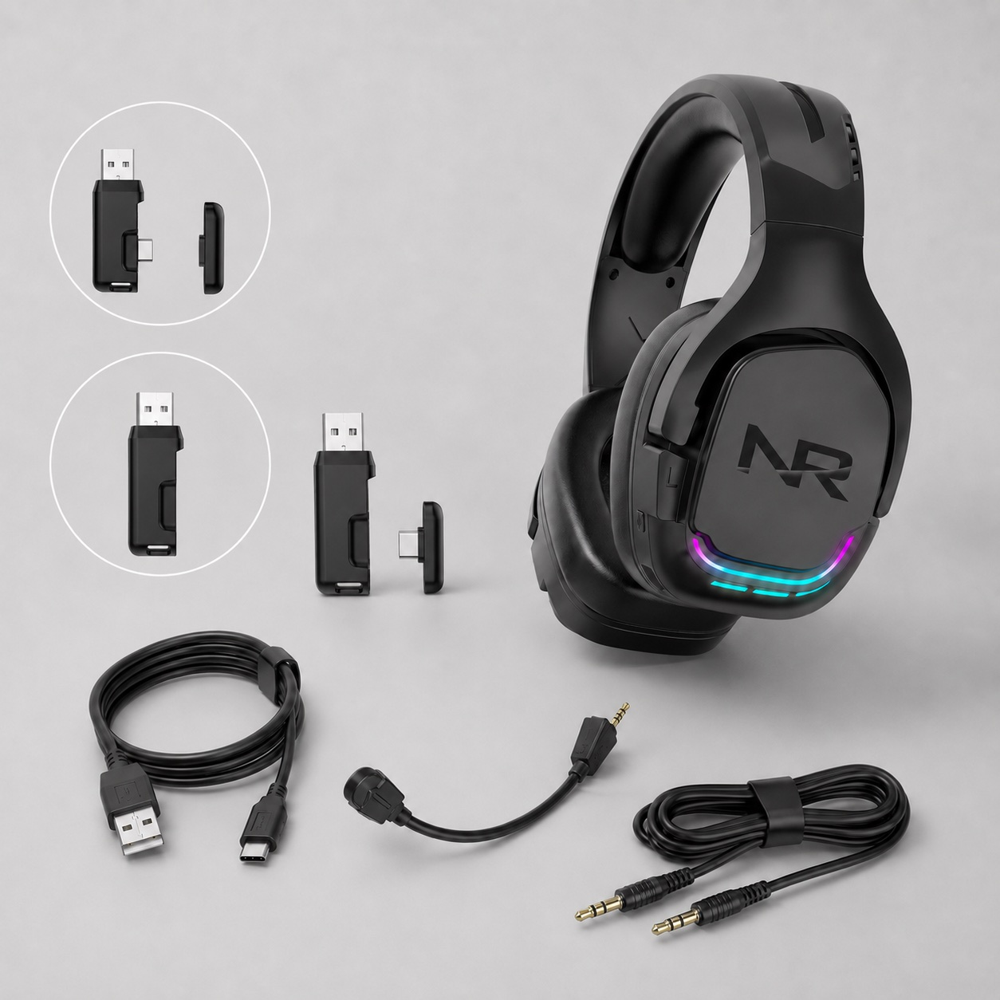
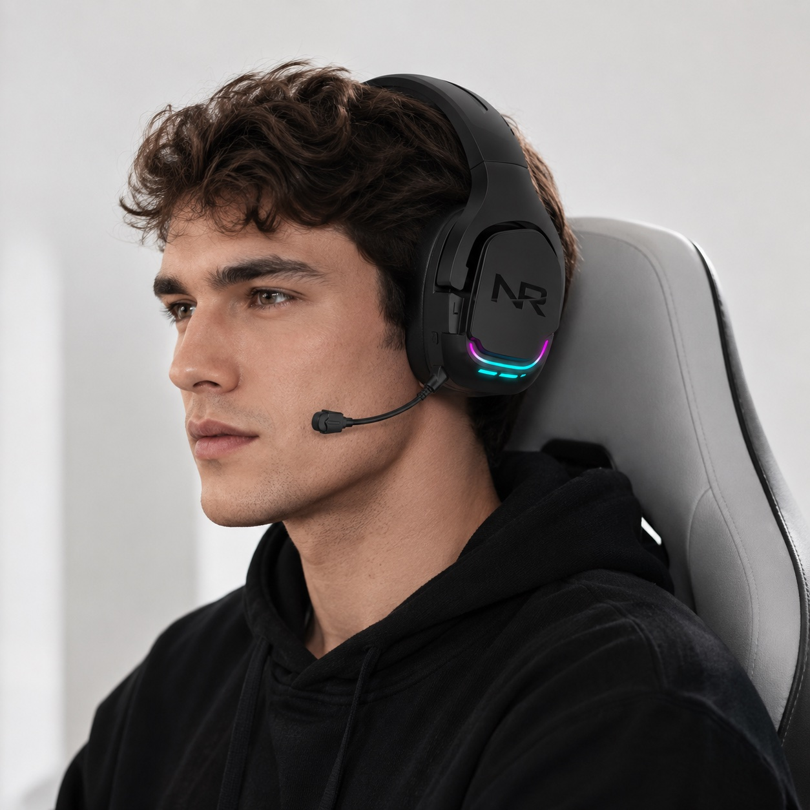
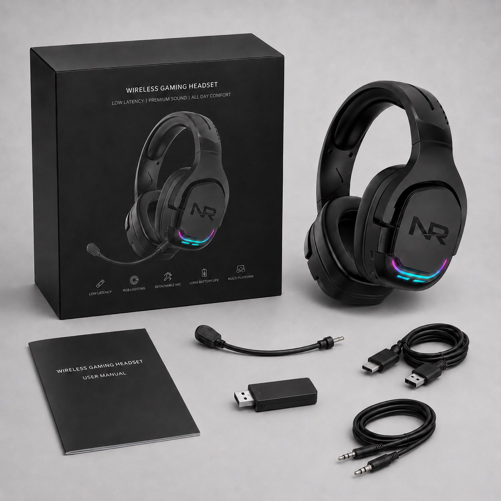

Product overview and receiver
The compact overview shows the headset direction, RGB area, microphone position and receiver set for first sample discussion.

G926 50mm RGB 2.4G wireless gaming headset
TALRIVO G926 is a wireless RGB gaming headset model direction with 50mm driver positioning, receiver reference, microphone structure, accessory set and product images for importer and private-label sample review.

Short answer
G926 is a TALRIVO wireless gaming headset model page for buyers comparing a 50mm RGB 2.4G headset direction before requesting samples. The page documents supplied images, receiver reference, microphone detail, accessory set, packaging reference and sample questions.
Product image evidence
Use these compact product, accessory and use-scene images to discuss sample configuration, receiver direction, microphone structure, packaging and content checks before approval.

The compact overview shows the headset direction, RGB area, microphone position and receiver set for first sample discussion.

Close-up imagery supports review of the earcup surface, logo area, RGB lighting and microphone connection point.

Detail views cover headband padding, ear cushion, receiver, controls, charging point and visible product construction.

The accessory image helps buyers confirm receiver, charging cable, audio cable and microphone-related parts by sample version.

The wearing image supports discussion of headset size, microphone placement, earcup coverage and channel-facing product presentation.

The packaging reference helps confirm box direction, manual, receiver, cable set and sample content before customization discussion.
Use-scene images show how the model can be presented for PC, console and daily communication contexts.
Key points
Use the corrected model data and supplied images to compare G926 before requesting a sample or packaging review.
G926 should be reviewed as a 50mm wireless gaming headset direction. Confirm the selected sample version before final project planning.
The visible RGB area and textured earcup design give this model a stronger gaming visual direction than cleaner minimalist styles.
The supplied images show receiver and cable references that buyers can use when checking the final sample package.
Review the microphone position, connection point and included parts on the selected sample before confirming content or packaging.
Verified specifications
The following data follows the current site model record after correcting the driver size. Final version, receiver, accessories and packaging should still be confirmed before bulk order.
Sample checklist
Sample evaluation
Use G926 when the shortlist needs a stronger RGB wireless look, then verify the physical sample against the buyer's target devices and sales channel before discussing final branding.
Test the receiver and selected connection setup on the buyer's actual PC, console, laptop or desktop scenario before treating the model as approved.
Confirm earcup finish, RGB area, headband, microphone connection point, receiver, cable set and packaging contents with photos from the reviewed sample.
Approve comfort, connection behavior, microphone use and accessory list first. Discuss logo, color, artwork and manuals after the base version is clear.
Include destination market, channel, quantity range, sample feedback, required accessories, packaging direction and document questions so the reply can be specific.
Product FAQ
G926 is useful for buyers reviewing a 50mm wireless RGB gaming headset direction with receiver, microphone, accessory and packaging images.
G926 is listed as a 50mm driver direction. Confirm the selected sample version before final project planning.
Confirm target devices, selected connection version, receiver set, microphone, RGB appearance, cable list, packaging direction and manual needs.
After checking the physical sample, send the market, channel, quantity range, connection setup, accessory questions, branding needs, packaging direction and documents.
Yes. Compare visual style, receiver direction, microphone structure, accessory set, packaging reference and target channel before sample selection.
Related pages
Share the destination market, sales channel, quantity range, sample timing, branding needs and packaging questions for a model-specific G926 review.